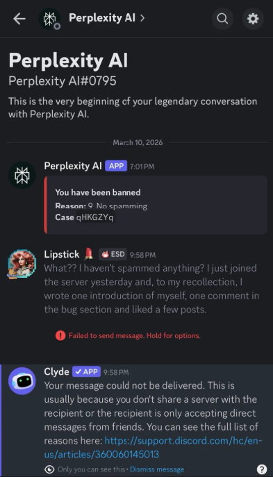
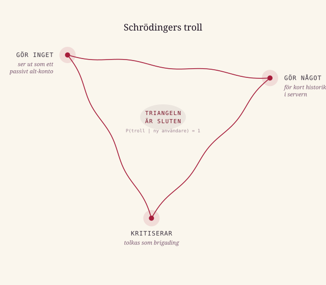

Händelser · 2026-03-10
Perplexity: sålde epistemisk dygd, levererade Kafka-bot
En kort berättelse om en legendarisk konversation som varade i ungefär ett dygn.
Perplexity AI byggde sitt rykte på en ovanlig idé i AI-ekosystemet: att svar ska vara verifierbara. Källhänvisningar, transparens, inget höljt i dunkel. I djungeln av sofomaniska* agenter som levererar självsäkra felaktigheter på löpande band, framstod Perplexity som ett nästan akademiskt anständigt alternativ. En robot med fotnoter. Naturligtvis blev det en favorit i vetenskapsinriktade kretsar.
Det var bland annat därför jag gick med i deras Discord-server häromdagen, efter att ha insett att mitt Revolut-abonnemang inkluderade ett Pro-konto. Jag presenterade mig enligt deras mall i välkomstkanalens introduktionstråd. Läste igenom kanalerna. Mutade ner de som inte intresserade mig. Hamnade i buggrapporten, som var ett öppet sår av klagomål. Kommenterade ett inlägg. Lämnade två, möjligen tre reaktioner. Hittade en Change.org-petition om att hålla Perplexity ansvariga för sina marknadsföringslöften, signerade den, och loggade ut.
Nästa dag donerade jag en slant till petitionen. En timme senare fick jag detta meddelande från Perplexitys egen bot:

Jag hade alltså tagit mig igenom hela välkomstprocessen, följt reglerna, skrivit en artig presentation, och var nu utkastad med ett ärendenummer som enda förklaring. Jag vill minnas att Josef K. åtminstone erbjöds en rättegång.
Det tekniskt intressanta är att bannen levererades av Perplexitys egen bot, med ett genererat ärendenummer. Ingen moderator syns i kedjan. Det är alltså med stor sannolikhet ett automatiserat beslut: nytt konto, aktivitet i en kanal med frustrerade inlägg, ett par gilla-markeringar. Mönstret pekar solklart på en koordinerad attack, brigading. (Att det också är exakt hur en ny, nyfiken, välkommen användare beter sig är den inbyggda logiska knuten i systemet.)
Om du inte gör något ser du ut som ett passivt alt-konto. Om du gör något har du misstänkt kort historik i servern. Om det du gör rör kritik är det en koordinerad attack. Det logiska felslutets triangel är sluten.
Triangeln har ett namn: Schrödingers troll. Oavsett tingets egentliga tillstånd är observationsutfallet detsamma: misstänkt troll.

Det djupare problemet är förstås att Perplexity säljer epistemisk dygd, transparens och verifierbarhet som kärnprodukt, och hanterar sina egna beslut som en svart låda. Ingenjörerna kan ha byggt ett system med utmärkta källhänvisningar. Modereringen drivs av en annan logik, med annan hastighet och annan grad av förklaringsskyldighet.
Det är ett klassiskt organisatoriskt gap. Det är inte unikt för Perplexity. Men det är lite extra synligt och ironiskt när Perplexity är den som drabbas av det.
Jag försökte lägga upp en mer saklig version av händelseförloppet på Reddit. Den avvisades av admins i flera subreddits för att den inte riktigt hörde hemma någonstans. Triangeln, visade det sig, var bredare än jag trott.